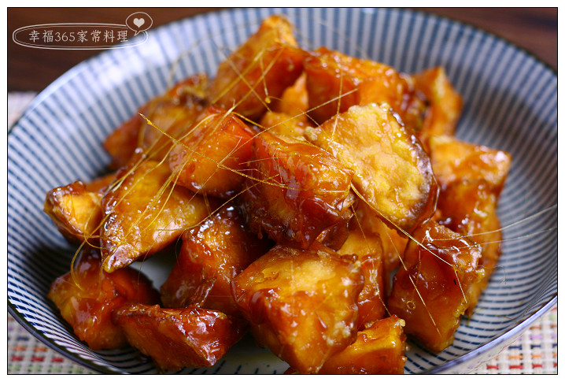

起油鍋，中小火將地瓜炸熟，約10分鐘。
另一鍋準備裹糖衣，鍋中倒入油、砂糖，開小火等待砂糖融化。
等糖的顏色變為微焦糖色後，就可倒入熟地瓜，均勻沾裹一層糖。
冷卻即可完成。

(首頁)台灣美食介紹 雞肉飯飯介紹 蚵仔煎介紹 白糖粿介紹
練習用音樂、影片
Your browser does not support the audio element. Your browser does not support the video tag.